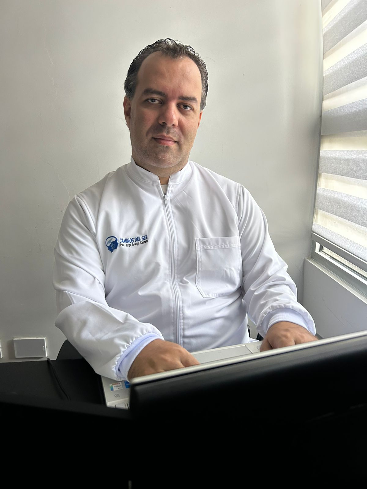

Caminos
del Ser
Acompañamiento humanista-existencial para descubrir el sentido profundo de tu vida y construir los proyectos que mereces.
Años de experiencia
Personas acompañadas
Profesionales en red
Líneas de servicio

Tu vida tiene
un propósito.
Descúbrelo.
Caminos del Ser es el espacio creado por Jorge Arango Castaño, psicólogo humanista-existencial, certificado en PNL y Magíster en Dirección y Gestión de Proyectos, para acompañar a personas que buscan encontrar sentido, claridad y dirección en su vida.
Desde 2016, hemos acompañado a cientos de personas —desde adolescentes hasta adultos mayores— en el proceso más importante que existe: conocerse a sí mismos y construir una vida alineada con sus valores y sueños.
Trabajamos con un enfoque interdisciplinario, apoyados en una red de profesionales especializados, para ofrecerte un acompañamiento integral y transformador.
Ver nuestros serviciosCaminos del Ser te acompaña si...
Sientes que tu vida no tiene dirección clara y no sabes qué quieres realmente.
Tienes sueños pero no sabes cómo convertirlos en proyectos concretos y realizables.
Tu relación de pareja necesita un nuevo rumbo compartido y mayor alineación de propósitos.
Estás en una transición vital —cambio de carrera, separación, jubilación— y necesitas apoyo.
Lideras un equipo o institución y quieres fortalecer el propósito colectivo y el bienestar.
Tienes un proyecto en mente y necesitas orientación profesional para formularlo y ejecutarlo.
Nuestros Servicios
Acompañamiento integral para que encuentres claridad, construyas tu camino y alcances lo que realmente importa.
Orientación en Propósito y Proyecto de Vida
Proceso profundo y personalizado para identificar tu propósito de vida y diseñar un plan concreto para materializarlo. Trabajamos contigo desde los 15 años en adelante, sin límite de edad.
- ✓ Sesiones individuales presenciales y virtuales
- ✓ Herramientas de PNL para cambio profundo
- ✓ Plan de vida estructurado y accionable
Atención a Parejas
Acompañamos a parejas en el proceso de alinear sus propósitos individuales y construir proyectos de vida conjuntos que fortalezcan la relación y les permitan crecer en armonía.
- ✓ Comunicación asertiva y resolución de conflictos
- ✓ Construcción del proyecto de vida en pareja
- ✓ Fortalecimiento del vínculo emocional
Talleres para Empresas e Instituciones
Diseñamos e impartimos talleres personalizados sobre propósito, proyecto de vida, PNL, liderazgo y gestión del cambio, adaptados a las necesidades específicas de cada organización.
- ✓ Talleres para equipos de trabajo y directivos
- ✓ Programas para instituciones educativas
- ✓ Formatos presenciales y virtuales
Consultoría en Proyectos y Convocatorias
Orientación especializada en la formulación y ejecución de proyectos, incluyendo preparación para convocatorias nacionales e internacionales, con foco en gestión eficiente y resultados exitosos.
- ✓ Formulación de proyectos sociales y educativos
- ✓ Preparación para convocatorias
- ✓ Acompañamiento en ejecución y seguimiento
Cursos y Programas Online
Potencia tus habilidades con nuestros programas especializados para profesionales y público general.
¿Cómo trabajamos?
Escucha profunda
Primera sesión de exploración para entender tu historia, tus bloqueos y tus aspiraciones.
Diagnóstico y mapa
Identificamos tus recursos, talentos y el propósito que ya habita en ti, listo para emerger.
Plan de acción
Diseñamos juntos un proyecto de vida concreto, con metas claras y pasos realizables.
Acompañamiento
Te apoyamos en el camino, celebrando avances y ajustando el rumbo cuando sea necesario.
Historias de Transformación
"Llegué sin saber qué quería hacer con mi vida a los 35 años. Después de meses de trabajo con Jorge, tengo claridad total sobre mi propósito y ya estoy ejecutando mi proyecto de vida. Ha sido el mejor proceso que he vivido."
Andrea M.
Diseñadora · Medellín
"El taller de propósito de vida que dieron en nuestra empresa cambió el ambiente laboral completamente. El equipo está más motivado, comprometido y alineado. 100% recomendado para cualquier organización."
Carlos R.
Gerente de RRHH · Bogotá
"Mi pareja y yo estábamos en crisis total. El proceso con Jorge nos ayudó a reencontrarnos, construir un proyecto común y hoy tenemos una relación más profunda y consciente que nunca antes habíamos tenido."
Laura & Pedro
Pareja · Cali
Jorge Arango
Castaño
Psicólogo de corriente humanista-existencial con más de 9 años acompañando procesos de transformación personal. Su enfoque integra la profundidad del ser con herramientas prácticas para la acción.
Certificado en Programación Neurolingüística (PNL) con múltiples niveles de formación, y Magíster en Dirección y Gestión de Proyectos.
Docente universitario desde 2011, lo que le permite transmitir conceptos complejos de forma clara, empática y efectiva.

Nuestra Red de Profesionales
Cuando el proceso lo requiere, contamos con un equipo interdisciplinario de especialistas que garantizan una atención integral.

Marcela Villegas
@villegasmg

Martha Benitez
@psi.marthabenitezb

Johana Moreno
@johamoreno_sexologa

Claudia Reyes
@claurece

Victor Rivera
@victorrivera.5

Steven Mackenzie
@profesormackenzie
Tu camino empieza
con un primer paso.
Agenda tu primera sesión hoy y descubre qué camino te está esperando. Sin compromisos, sin presiones — solo una conversación que puede cambiarlo todo.
📍 Atención presencial y virtual · Colombia y el mundo